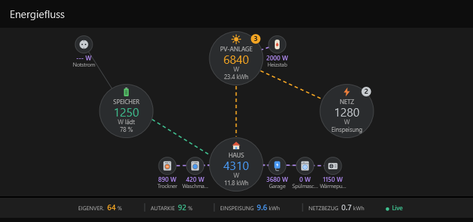

Zeigt im Windows-QuadClient, wohin der Strom gerade fließt: PV-Anlage, Speicher, Netz und Haus als Kreise, dazu bis zu 17 einzelne Verbraucher – Wallboxen, Waschmaschine, Wärmepumpe und was sonst gemessen wird – jeder mit eigenem Symbol und Anschlusspunkt. Hinter jedem Kreis können Einzelwerte stehen, etwa drei Wechselrichter hinter der PV-Anlage.

| KO | Wert | Anzeige |
|---|---|---|
| PV-Leistung | W | Kreis „PV-Anlage“. Größer 0: Linie PV → Haus. |
| Speicher-Leistung | W | Kreis „Speicher“, angezeigt wird der Betrag. |
| Hausverbrauch | W | Kreis „Haus“. |
| Netz-Leistung | W | Kreis „Netz“. Positiv = Einspeisung (Linie PV → Netz), negativ = Bezug (Linie Netz → Haus). |
| Speicher-Ladestand | % | Im Kreis des Speichers. |
| Speicher-Zustand | 1 / 2 / sonst | 1 = lädt (Linie Haus → Speicher), 2 = entlädt (Speicher → Haus), sonst Ruhe. Ohne dieses KO gibt es keine Linie zum Speicher. |
| PV-Ertrag heute, Verbrauch heute | kWh | Im Kreis der PV-Anlage und des Hauses. |
| Eigenverbrauch, Autarkie | % | Fußzeile. |
| Einspeisung heute, Netzbezug heute | kWh | Fußzeile. |
Leistungen als DPT 9 oder DPT 14 in Watt. Das Plugin rechnet nichts um und bildet keine Summen: Jeder Wert kommt so vom HomeServer, wie er angezeigt wird.
| Feld | Bedeutung |
|---|---|
| Art | „Verbraucher“ für einen eigenen kleinen Kreis, „Einzelwert“ für eine Zeile hinter einem Hauptkreis (siehe unten). |
| Name | Text unter dem Symbol, etwa zehn Zeichen passen. Leer = Vorgabe nach dem Symbol (Wallbox 1, Waschmaschine, Verbraucher 1 …). |
| Symbol | Wallbox, Auto, Waschmaschine, Spülmaschine, Trockner, Herd, Kühlschrank, Wärmepumpe, Warmwasser/Heizstab, Klimaanlage, Licht, Steckdose, Pool, Fernseher, Computer, Sonstiges. |
| Anschlusspunkt | Haus (üblich), PV-Anlage, Speicher oder Netz: Von dort läuft die Linie zum Verbraucher. |
| KO Leistung [W] | Leistung in Watt. 0 = dünner Strich, negativ = die Striche laufen zurück zum Anschlusspunkt. Ab 10 kW zeigt die Anzeige kW. |
Angezeigt werden höchstens 17 Verbraucher mit KO. Die Pfeile ∧ ∨ ändern die Reihenfolge; sie bestimmt, wer näher am Anschlusspunkt sitzt. Am Haus haben zehn Verbraucher in einer Reihe Platz, bei mehr werden es zwei Reihen ohne Namen.
Ein Einzelwert ist ein Eintrag mit der Art „Einzelwert“: Name, Hauptkreis (PV-Anlage, Speicher, Netz oder Haus) und das KO der Leistung in Watt. Am Kreis erscheint eine kleine Scheibe mit der Anzahl; ein Klick auf den Kreis blendet die Liste ein. Höchstens acht je Kreis. Ohne Namen heißen sie „Wechselrichter 1“, „Speicher 1“, „Zähler 1“ oder „Bereich 1“.
Der Kreis selbst zeigt weiter den Wert seines eigenen KOs (z. B. „KO PV-Leistung“). Die Summe der Einzelwerte steht nur im eingeblendeten Feld; das Plugin trägt sie nicht in den Kreis ein. Das Summen-KO muss also der HomeServer liefern.
error.log des QuadClients (Zeilen mit „Energiefluss 99-3“).